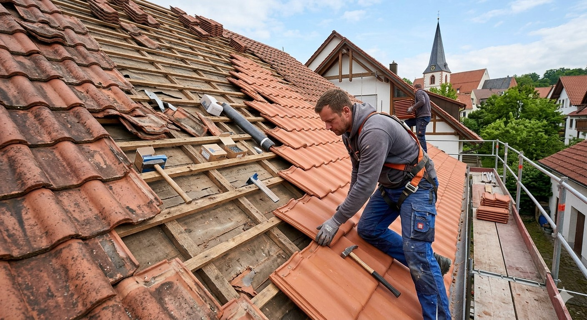
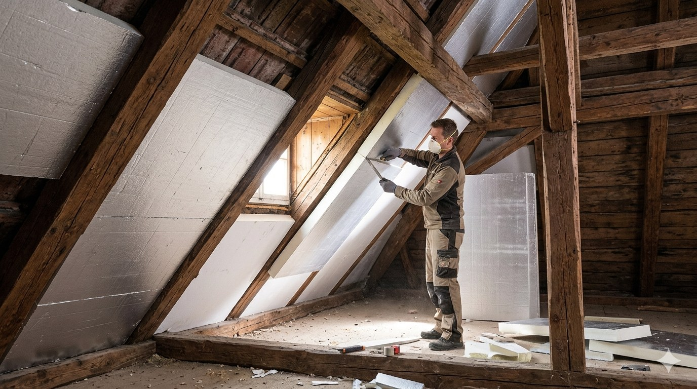
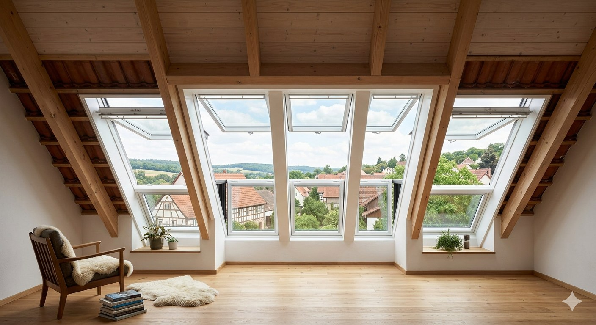
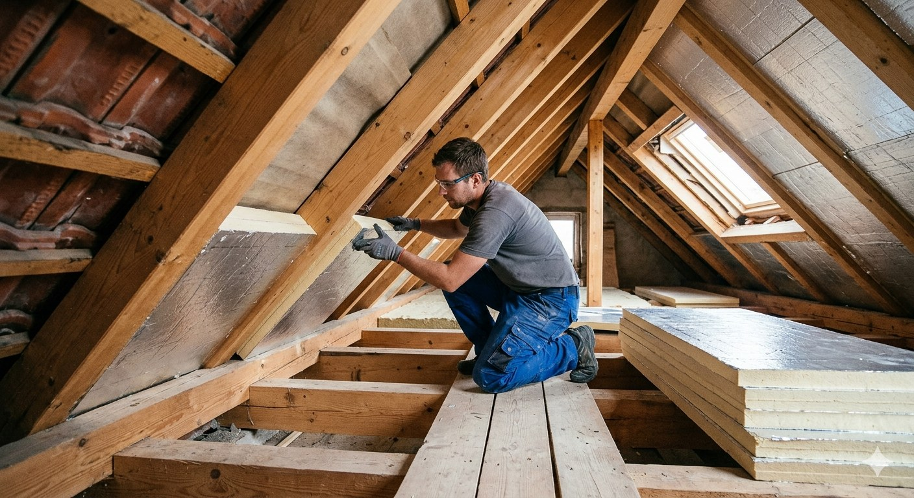

Über 850 abgeschlossene Dachprojekte in Stuttgart und Umgebung. Sehen Sie selbst, was unsere Handwerker leisten.
Zwei echte Projektvergleiche aus Stuttgart und der Region – so sieht professionelles Dachdeckerhandwerk aus.
Nur eine Auswahl unserer Arbeit – sprechen Sie uns gern auf weitere Referenzen in Ihrer Nähe an.

Vollständige Erneuerung von Unterkonstruktion und Eindeckung – Tondachziegel Braas Granat, inkl. Dachrinnenarbeiten.

Neuabdichtung eines 380 m² Gewerbe-Flachdaches mit EPDM-Bahn, inkl. Gefälleplanung und neuer Entwässerung.

Ersteinbau von 5 Velux GGL-Fenstern in ein Satteldach – Montage an einem Tag, vollständig wasser- und winddicht.
Komplette Neueindeckung eines EFH mit Creaton-Tondachziegeln – inkl. neuer Unterspannbahn, Konterlattung und Traglattung.

Vollständige Erneuerung der Dachentwässerung mit hochwertigen Kupferrinnen und -fallrohren an einer Stuttgarter Gründerzeitvilla.
Kombination aus Zwischen- und Untersparrendämmung mit Isover Integra ZSF 035 – Energieeinsparung über 40% erzielt.
"Nach dem Sturm hatte unser Dach massive Schäden. Fischer Dachtechnik war am nächsten Tag da, hat alles dokumentiert, den Versicherungsschaden begleitet und das Dach in Rekordzeit neu gedeckt. Absolut zuverlässig!"
"Sehr professionelle Abwicklung von der ersten Besichtigung bis zur fertigen Eindeckung. Festpreis wurde eingehalten, die Crew war pünktlich und hat sauber gearbeitet. 5 Sterne verdient!"
"Drei Velux-Fenster eingebaut – alles an einem Tag, ohne Regeneinbruch oder Folgeschäden. Herr Fischer hat uns beraten und genau das richtige Modell empfohlen. Klasse Service!"
Kontaktieren Sie uns für eine kostenlose Besichtigung und ein unverbindliches Festpreisangebot.